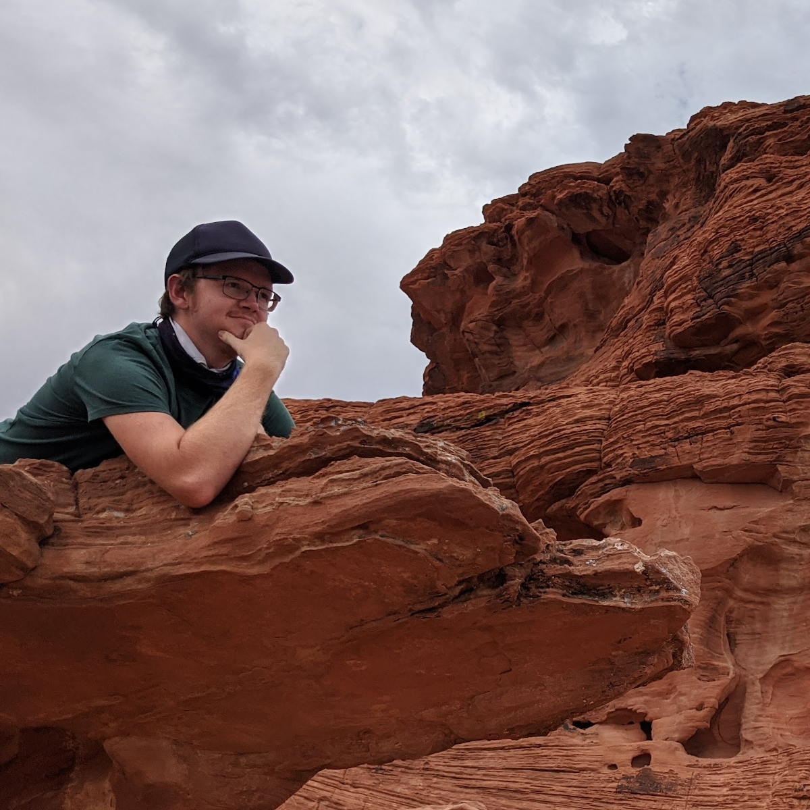
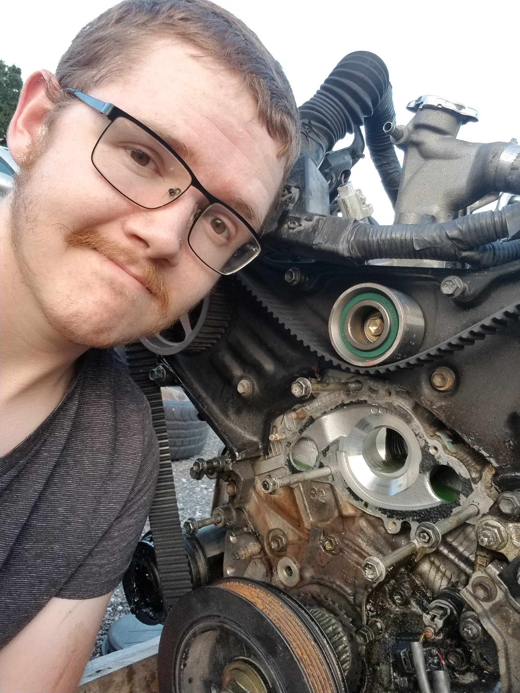

About Curtis T Davis
 I was born and raised in Tampa Bay, FL. Other than studying and conducting research for USF, I enjoy many other hobbies. I often enjoy running and hiking, sometimes travelling to other states to find new and exciting trails. One of my favorite places I've visited has been my trip through Arizona and Nevada. I took this trip with my friends where we went from Las Vegas, to the Grand Canyon, then north to Seattle. My favorite place to visit was Oregon, though the picture presented in this section was at the Valley of Fire in Navada.
 I also enjoy working on cars and other machines in my free time. In the past few years I've swapped the transmission in my '98 Mustang GT, swapped the engine in my 2004 Camry, and have helped many others with their mechanical issues as well. It was a hobby I had never expected to get into, however I was compelled into it when my car broke down and I had to have a way to commute to school and work. Working on engines has certainly become one of my favorite hobbies, learning how all the inner mechanisms operate and fixing what was broken.
I've also had similar experience fixing small engines, such as mowers, pressure washers, and tractors. This was a job I had for two years before I started my research position at USF. Though I don't have many opportunities now to work on small engines, I do help out my family and friends with my unique knowledge and experience I had obtained at my past position in machine repairing.